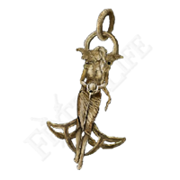

Arcane build: Bleed em dry!
(If it bleeds we can kill it!)
This is by far the most powerful build choice in the entire game. Bleed is a status effect that when triggered will chunk a percentage of the enemies HP. There are only a handful of enemies resistant to this so whether you're fighting a lowly sorcerer or a colossal dragon you have no need to worry.
Stats
This is a rough outline of the stats you should be aiming for.
Treat this is a general guide and not a rigid ruleset, which means do not be afraid to deviate if you say find a cool magic sword and need some INT, or find yourself suddenly wanting to become a strength powerhouse! Do what you enjoy.
Strength
You only need to raise this to the minimum required for your weapon of choice.
Dexterity
You only need to raise this to the minimum required for your weapon of choice.
Vigor
A Minimum of 30 is reccomended.
Endurance
A Minimum of 30 is reccomended.
Arcane
The meat of this build. Target level is 99.
Talismans
Lord of bloods exultation
Increase your outgoing damage by 20% for a short period everytime you bleed an enemy.

Great Jars Arsenal
This massively increases your equip load allowing you to equip heavier armour with less endurance investment.

Green turtle talisman
Massivley increases stamina regen. Allowing you to fight harder for longer.

Erdtrees favor
This will give a small boost to maximum stamina, HP and equip load allowing your character to be just a little more powerful.